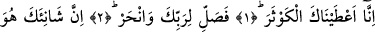
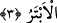

BİZ SANA
KEVSER’İ VERDİK
Bismillâhirrahmânirrahîm
1. (Rasûlüm!) Şüphesiz biz sana Kevser’i verdik.
2. Şimdi sen Rabbin için namaz kıl ve kurban kes!
3. Asıl sonu kesik olan, şüphesiz sana hınç besleyendir.
Âyetin başındaki “inne” harfi, yemîn yerindedir, kendinden sonraki cümleyi te’kîd,
yâni pekiştirmek için gelmiştir.
“Biz sana verdik” anlamındaki cümlenin fiilinin, uhrevî ihsanlar henüz
verilmemişken, dünyada verilecek olanların çoğu henüz ele geçmemişken mâzî kipi ile
getirilmesi, bunların vukû bulacağının kesin olduğunu göstermek içindir.
“Kevser” kelimesi, çok hayır demektir ve ilimde, amelde, dünya ve âhiret şerefinde
çokluğu ifâde eder. Kesret (çokluk) kelimesi “fev‘al” kalıbında gelmiştir, tıpkı
nevfel/cömert, çokça veren ve cevher/çok açık gibi… Oğlu seferden dönen bir bedevî
kadına:
“–Oğlun ne ile döndü?” diye sormuşlar, o da:
“–Kevserle döndü” diye cevap vermiş. Yâni çok sayıda hayır ve malla döndü
demektir.
Kâmûs’ta ifâde edildiğine göre Kevser, her şeyin çoğu demektir.
Müfredât’ta deniyor ki; çok cömert olan kimseye “kevser” denebilir. Yine,
“tekevsera’ş-şey’ü” denir ki, mânâsı, bir şeyin sayısız ve sınırsız biçimde çok olması
demektir.
Rivâyet edildiğine göre Nebiyy-i Ekrem Efendimiz (s.a.) bu âyeti okumuş ve “Kevser
nedir biliyor musunuz?” diye sormuş. Sonra da: “O, Cennette bir nehirdir. Rabbim
onu bana vereceğini va‘detti. Onda çok hayırlar vardır. Baldan daha tatlı, sütten
daha beyaz, kardan daha soğuk ve tere yağından daha yumuşaktır. Kenarları
zeberceddir, gümüşten bardakları semânın yıldızları adedincedir. Ondan içen bir
daha ebediyen susamaz.
Bu nehre ilk gelecek olanlar, elbiseleri tozlu, saçı başı dağınık fakîr muhâcirlerdir.
Öyle ki onlar nîmetler içinde yaşayan hanımlarla evlenemezler, evlerin kapıları